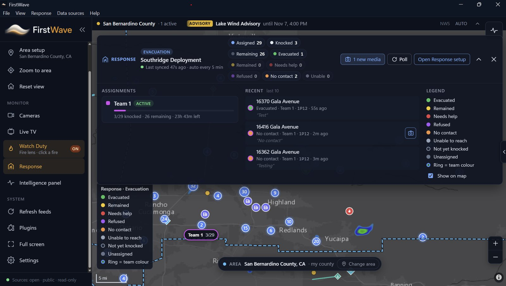
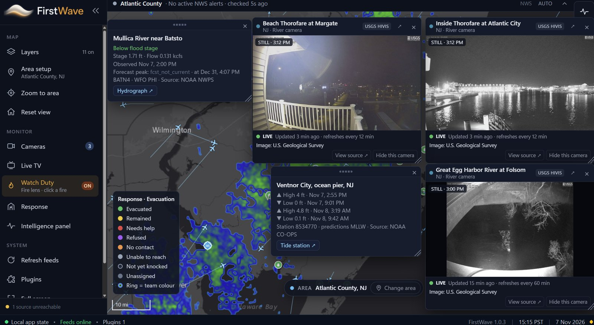
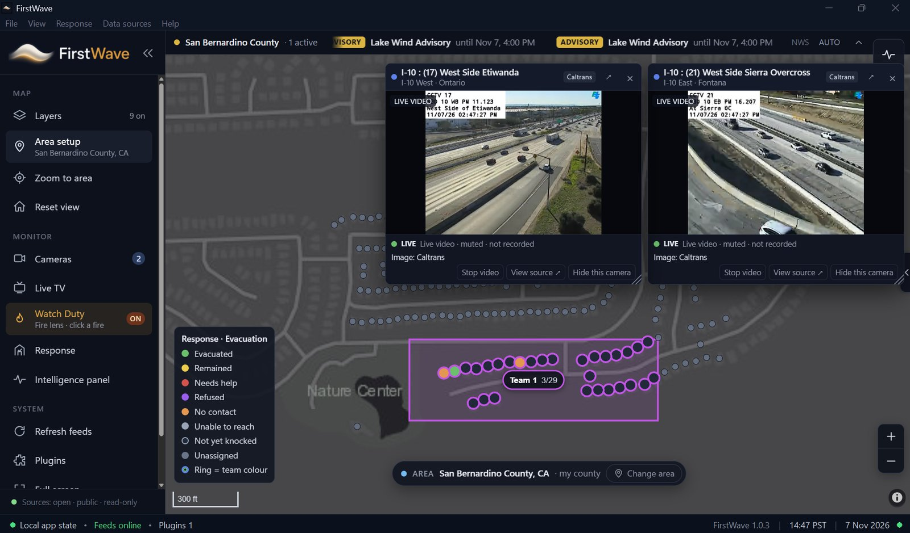
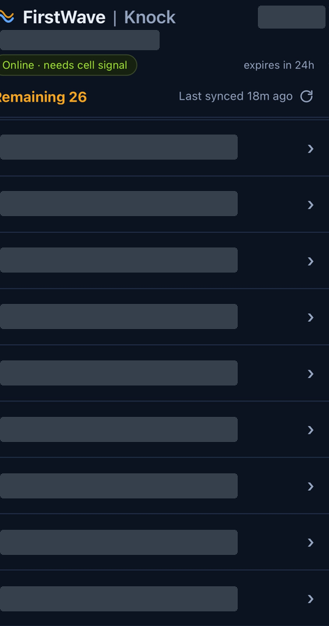
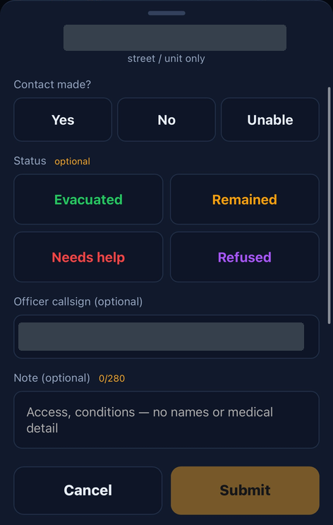
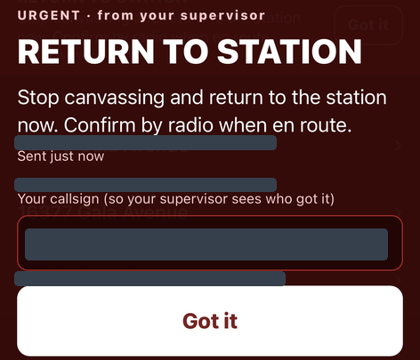
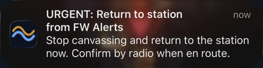

See the signals together.
Power outages, rising rivers and tides, cameras, and road conditions in one view — context for spotting where residents may need help. Public feeds inform the picture; field crews and agency judgment make the call.
Bring the operations center to the field. Public-source intel, live cameras, and encrypted field reports in one picture — on your operations computer, with your response data stored locally. Built for responders and government crews, from first response through recovery.

Floods, hurricanes, tornadoes, earthquakes, blizzards, fires, volcanic eruptions — each puts different pressure on the same communities. A river gauge tells one part of the story. A camera shows another. A crew on a damaged street sees something no public feed can explain.
Power outages, rising rivers and tides, cameras, and road conditions in one view — context for spotting where residents may need help. Public feeds inform the picture; field crews and agency judgment make the call.
Mapped door outcomes and photo/video reports from the field show which areas are damaged and what needs attention — kept distinct from public-source conditions.
Give responders, public works, city and road crews shared context for evacuation decisions, roadway clearing, and recovery — with native team alerts that keep assigned crews informed.
The first crew doesn't wait for an operations center. FirstWave is built for the responders already in the field — first on scene, making sense of what's happening and what comes next. That mission extends to the public works and government crews assessing damage, clearing roadways, and supporting recovery.
Cameras, live-intel sources, and responder photo/video reports come together on one map — for Fire, EMS, Police, emergency management, public works, and every government team supporting response and recovery. Not just crime response.
The free version includes the full public open-intel map and dashboard. Pick your area and bring the public-source layers that matter into view.
Alerts, radar, fire detections, river levels, and coastal conditions in a shared geographic context.
Agency and state DOT cameras, road closures, and aircraft context — right on the map.
Local news, live-TV options, and the Watch Duty fire lens alongside your map. GIS and additional plugin support come with a paid license.

See river gauges and tide predictions next to live coastal and river cameras and weather radar — so citizen needs and crew observations land in context.
Each panel shows where its data comes from, so your team always knows what they're looking at.
Layers you can bring into view. Source availability and coverage vary by area.
Active weather alerts in a live ticker, with radar on the map.
NASA FIRMS hotspots and wildfire incident layers.
NOAA NWPS stage, flow, and flood-stage readings.
USGS HIVIS camera stills, refreshed on the map.
NOAA CO-OPS high/low tide predictions by station.
Live roadway video and closures (e.g., Caltrans).
Outage context to help spot residents who may need help.
ADS-B aircraft positions in your area.
Recent seismic and volcanic activity layers.
Click a fire for wildfire context.
Keep local coverage a click away.
GIS and additional plugin support with a paid license.
Field teams, connected. No app required. The response license connects your operations computer with browser-based Evacuation and Recovery assignments, field reports, and FirstWave's native team alerts.
Add officers, staff, and volunteers on the operations computer. Each person pairs their phone once with a QR code. For surge staff and mutual aid, share a sign-up QR, approve each person, and let sign-ups expire after 4, 12, or 24 hours. A one-click readiness test flags phones that need to reconnect — send a new link remotely.
Start a deployment in Evacuation mode for door-to-door notification and welfare checks, or Recovery mode for damage assessment and search. Draw or select an area, assign address lists, and pick team members from your roster.
Notify every team member with one action. They tap the notification to open an address list, map, and door form in their phone's browser — no app store, no responder account, no password. Works with modern iPhone and Android browsers.
Evacuation forms record the outcome at every door. Recovery forms use FEMA damage-assessment categories and capture trapped, injured, or deceased people, hazards, occupants, searched status, and notes. Attach photos and short videos.
Reports sync to the operations computer every few minutes. Color-coded addresses, team progress bars, completed counts, and time remaining bring the work into view. Open photos and videos right in the map's address card.
Needs-help, trapped, or injured reports rise to the top with an immediate red on-screen alert the moment they arrive. Message one team or all teams through FirstWave's own alerts — urgent messages take over the screen and responders tap "Got it." See who's acknowledged ("3 of 4 got it") by callsign; FirstWave re-checks every minute until everyone responds.
Draw an assignment area and watch it fill in as crews report — outcome colors on each address, team progress at a glance, and live DOT cameras alongside so you can see the roads your crews are working.

What responders see in their phone's browser — the address list, the door-outcome form, and team alerts with one-tap acknowledgment. Identifying details are masked in these samples.




Roster names and contact details are stored encrypted on your operations computer — not in a cloud-hosted roster database. Response data stays local, not in long-term vendor cloud storage.
Field reports, photos, and videos are end-to-end encrypted on the phone so only your FirstWave operations computer can open them.
A relay passes encrypted field data between phones and the operations computer, and deletes it once the computer picks it up.
No resident owner names are pulled into assignments, and field responders don't need accounts or passwords.
Start free with the public open-intel map, request a free 60-day trial license for your government agency, or license the full response toolkit per user — once.
Full public map & dashboard
The full response toolkit, licensed once.
Free trial license, by request.
| Feature | Free | $600 / user |
|---|---|---|
| Open intel map & dashboard | Included | Included |
| Evacuation / Recovery deployments | — | Included |
| Drag-box team assignment | — | Included |
| Knock Canvas QR / link | — | Included |
| Door outcomes & photo/video media | — | Included |
| Common operating picture auto-sync | — | Included |
| Native team alerts & acknowledgments | — | Included |
| GIS & additional plugin support | — | Included |
Download the installer for the free public version. Agency response features unlock with a paid or trial license.
Always the newest release.
Download FirstWaveLatest release · Release notes & past versions ↗
The installer isn't code-signed yet, so Windows SmartScreen may show a warning the first time you run it. To continue:
Email Justin@intellect-le.com with your agency name and number of users.
Screenshots show demo data, not live incident information. FirstWave supports — and doesn't replace — field assessment, dispatch, and agency judgment. An internet connection is required for live feeds, field reporting, and alerts. Public-source feed availability and coverage vary by area. Team alerts are for your assigned crews and are not a public mass-notification system; push notifications depend on device, browser, and permission settings. Recovery forms follow FEMA damage-assessment categories; FirstWave is not FEMA-certified.